Biography
I am a Postdoctoral Research Fellow at the Advanced Robotics and Computationally AugmenteD Environments (ARCADE) Lab, led by Dr. Mathias Unberath, in the Department of Computer Science at Johns Hopkins University. My research aims to develop transformative assistive and automation technologies that drive the future of automation in healthcare. I particularly focus on advancing automation across three synergistic domains: (a) clinical training, (b) surgical assistance and automation, and (c) clinical operations analysis and automation.
I earned my Ph.D. in Biomedical Engineering from the National University of Singapore (NUS), under the mentorship of Dr. Ren Hongliang. My doctoral thesis, titled “Scene Understanding through Multimodal Reasoning for Robotic Surgery”, focused on pioneering and advancing vision-language models for surgical scene understanding tasks, including surgical visual-question answering ( SurgicalGPT & Surgical-VQA) and surgical scene graphs. My work on SurgicalGPT won the MICCAI 2023 STudent Author Registration (STAR) Award. I also hold a Bachelor's degree (with Honours) in Electrical Engineering from the NUS and a Diploma in Mechatronics from Temasek Polytechnic, Singapore. During my bachelor's studies, I was awarded the NUS Outstanding Undergraduate Researcher Prize and the Faculty of Engineering's 32nd Innovation & Research Award for my work in the Design-Centric Programme, where our multi-disciplinary team successfully miniaturized surgical tools for minimally invasive surgery using a novel tendon-driven actuation mechanism.
Beyond academia, I bring over four years of industry experience at a robotics startup, where I progressed from a Software Engineer to Engineering Manager, leading the development of delivery robots for the food and warehouse sector. I also have an extensive leadership background, including close to a decade of service as a senior police officer in the Singapore Police Force as part of Singapore's mandatory national service.
I have authored numerous peer-reviewed journal articles and conference papers, including MICCAI, ICRA, RA-L, and IJCARS. I have also won multiple academic and leadership awards. For a detailed list, please refer to my CV or Google Scholar.
Select Awards

Outstanding Reviewer Award
International Conference on Medical Image Computing and Computer Assisted Intervention 2023
STudent-Author Registration (STAR) Award
International Conference on Medical Image Computing and Computer Assisted Intervention 2023
Outstanding Undergraduate Researcher Prize
National University of Singapore AY2017/2018
FoE 32nd INNOVATION & RESEARCH AWARD
National University of Singapore 2018
Singapore Manufacturing Federation Metal, Machinery & Engineering Industry Group Project Prize
Temasek Polytechnic 2013
Commendation Award for Major Project
Temasek Polytechnic 2013
Select Publications
(* Co-first author)
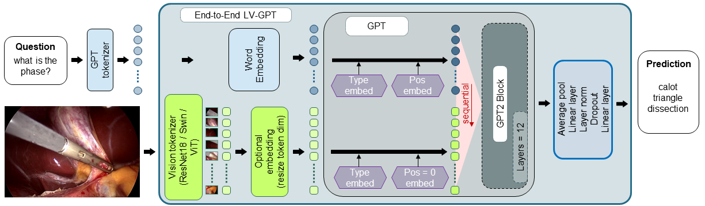
SurgicalGPT: End-to-End Language-Vision GPT for Visual Question Answering in Surgery.
Lalithkumar Seenivasan*, Mobarakol Islam*, Gokul Kannan and Hongliang Ren.
Medical Image Computing and Computer-Assisted Intervention (MICCAI), 2023.
[preprint]
[code (will be made available soon)]
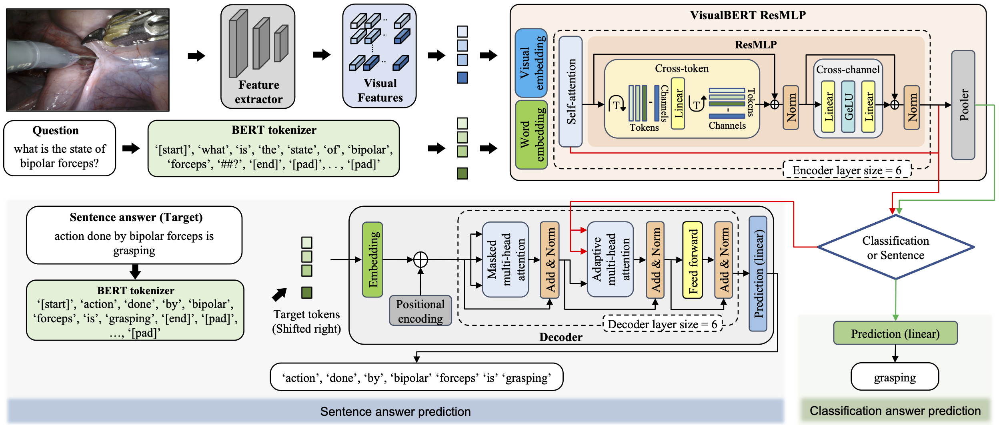
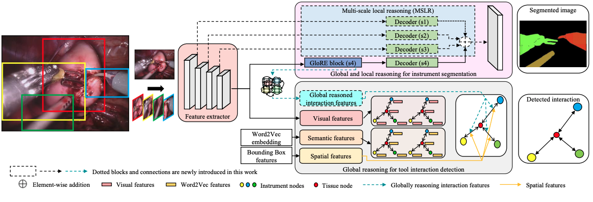
Global-Reasoned Multi-Task Learning Model for Surgical Scene Understanding.
Lalithkumar Seenivasan*, Sai Mitheran*, Mobarakol Islam and Hongliang Ren.
IEEE Robotics and Automation Letters & IEEE International Conference on Robotics and Automation (RA-L & ICRA), 2022.
[preprint][code]
[poster]
[video]

Rethinking Feature Extraction: Gradient-Based Localized Feature Extraction for End-To-End Surgical Downstream Tasks.
Winnie Pang*, Mobarakol Islam*, Sai Mitheran, Lalithkumar Seenivasan, Mengya Xu and Hongliang Ren.
IEEE Robotics and Automation Letters & IEEE International Conference on Robotics and Automation (RA-L & ICRA), 2023.
[preprint]
[code]
[video]
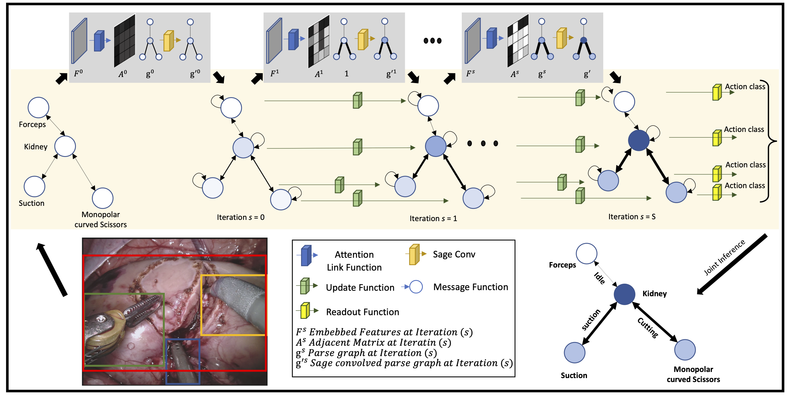
Select Talks and Presentations
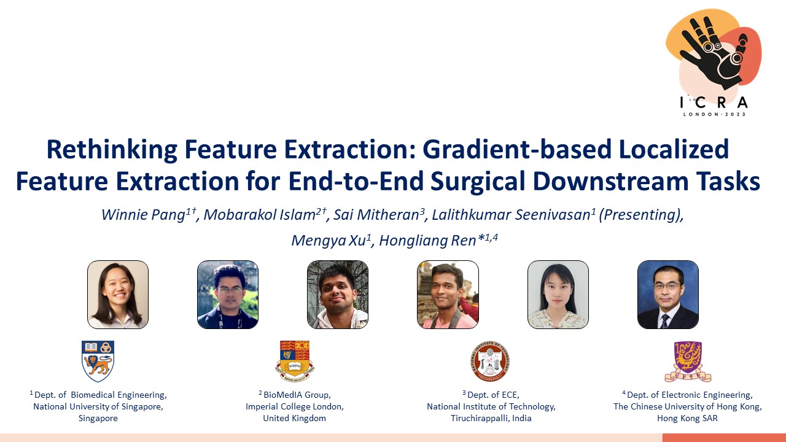
Gradient-Based Localized Feature Extraction for End-To-End Surgical Downstream Tasks
IEEE International Conference on Robotics and Automation, London, May. 2023. [video]
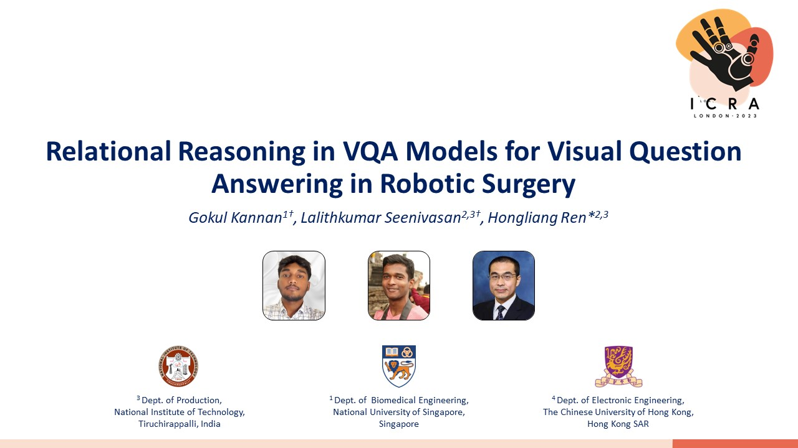
Relational Reasoning in VQA Models for Visual Question Answering in Robotic Surgery
ICRA 2023 Workshop:Surgical Robotics London,
May. 2023.
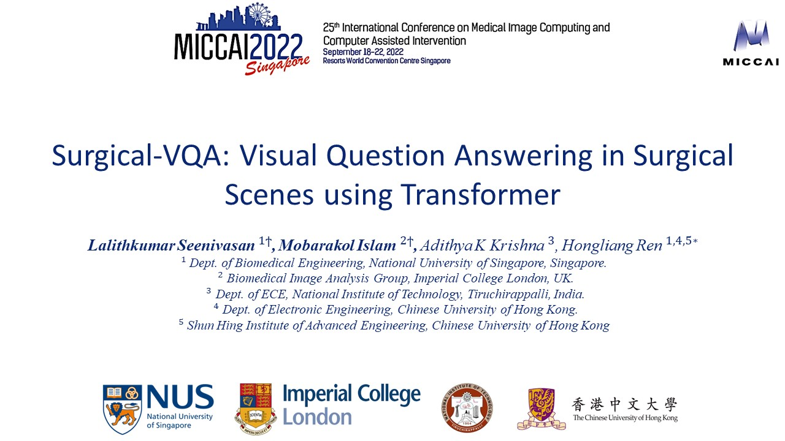
Surgical-VQA: Visual Question Answering in Surgical Scenes Using Transformer
Medical Image Computing and Computer-Assisted Intervention (MICCAI) Singapore, Sep. 2022. [video]
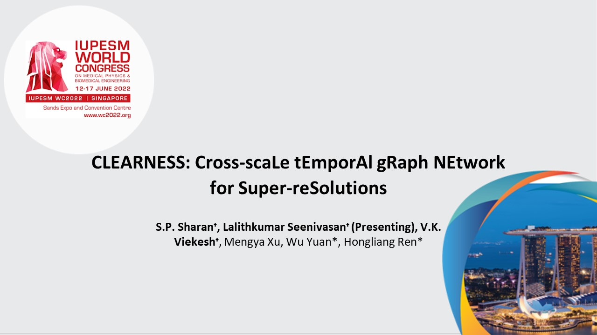
CLEARNESS: Cross-scaLe tEmporAl gRaph NEtwork for Super-reSolutions
IUPESM WORLD CONGRESS ON MEDICAL PHYSICS AND BIOMEDICAL ENGINEERING Singapore, Jun. 2022.
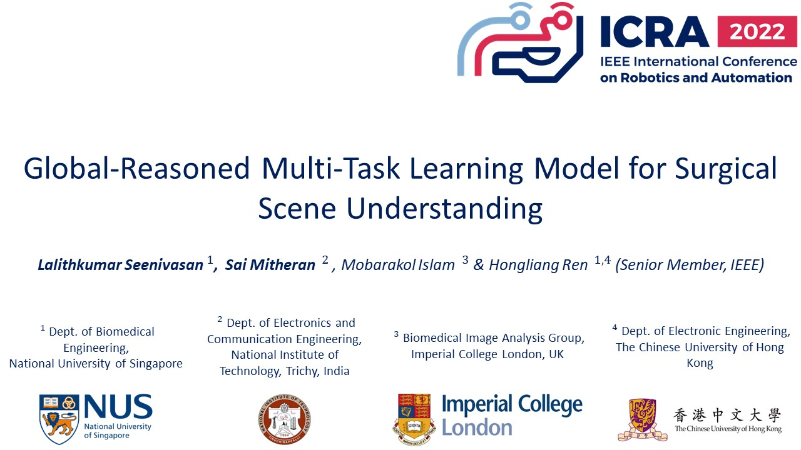
Global-Reasoned Multi-Task Learning Model for Surgical Scene Understanding
IEEE International Conference on Robotics and Automation Philadelphia, May. 2022. [video]
Academic Services
Program Committee
- DART Workshop, Medical Image Computing and Computer Assisted Intervention (MICCAI), 2023
- DART Workshop, Medical Image Computing and Computer Assisted Intervention (MICCAI), 2022
Meta-Reviewer
- Medical Image Computing and Computer Assisted Intervention (2025)
Reviewer
Journals
- IEEE Transactions on Medical Imaging (2023 - current)
- International Journal of Computer Assisted Radiology and Surgery (2024 - current)
- IEEE Robotics and Automation Letters (2023 - 2025)
- ACM Transactions on Human Robot Interaction (2025)
- IEEE Sensors Journal (2022)
Conferences
- IEEE/RSJ International Conference on Intelligent Robots and Systems (2025)
- International Conference on Information Processing in Computer-Assisted Interventions (2025)
- IEEE International Conference on Robotics and Automation (2023, 2025)
- Medical Image Computing and Computer Assisted Intervention (2023 - 2024)
- DART Workshop, Medical Image Computing and Computer Assisted Intervention (2022-2023)
Conference and Journal
SurgicalGPT: End-to-End Language-Vision GPT for Visual Question Answering in Surgery.
Lalithkumar Seenivasan*, Mobarakol Islam*, Gokul Kannan, Hongliang Ren.
Medical Image Computing and Computer-Assisted Intervention (MICCAI), 2023.
[preprint]
[code (will be made available soon)]
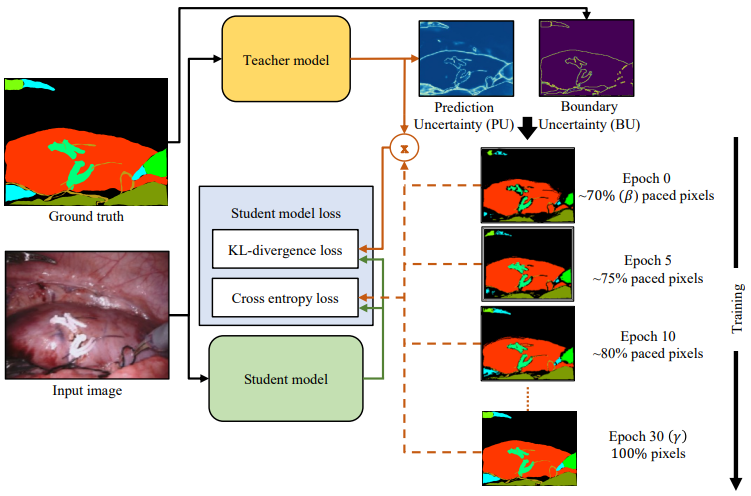
Paced-Curriculum Distillation with Prediction and Label Uncertainty for Image Segmentation.
Mobarakol Islam*, Lalithkumar Seenivasan*, SP Sharan, VK Viekash, Bhavesh Gupta, Ben Glocker and Hongliang Ren.
International Journal of Computer Assisted Radiology and Surgery (IJCARS), 2023.
[preprint]
[code]
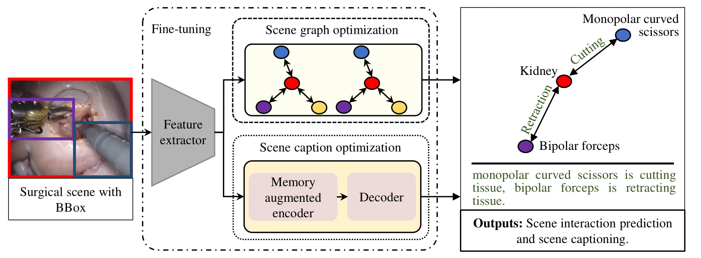
Task-aware asynchronous multi-task model with class incremental contrastive learning for surgical scene understanding.
Lalithkumar Seenivasan, Mobarakol Islam, Mengya Xu, Chwee Ming Lim and Hongliang Ren.
International Journal of Computer Assisted Radiology and Surgery (IJCARS), 2023.
[preprint]
[code]
Rethinking Feature Extraction: Gradient-Based Localized Feature Extraction for End-To-End Surgical Downstream Tasks.
Winnie Pang*, Mobarakol Islam*, Sai Mitheran, Lalithkumar Seenivasan, Mengya Xu and Hongliang Ren.
IEEE Robotics and Automation Letters & IEEE International Conference on Robotics and Automation (RA-L & ICRA), 2023.
[preprint]
[code]
[video]
Global-Reasoned Multi-Task Learning Model for Surgical Scene Understanding.
Lalithkumar Seenivasan*, Sai Mitheran*, Mobarakol Islam and Hongliang Ren.
IEEE Robotics and Automation Letters & IEEE International Conference on Robotics and Automation (RA-L & ICRA), 2022.
[preprint][code]
[poster]
[video]
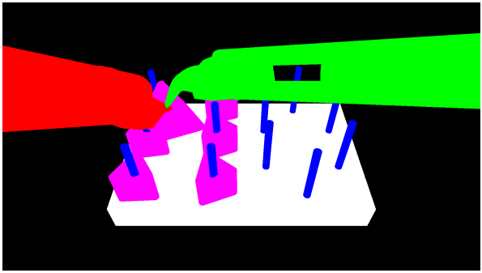
PEg TRAnsfer Workflow Recognition Challenge Report: Do Multi-Modal Data Improve Recognition?.
Arnaud Huaulmé, et. al, ...... Lalithkumar Seenivasan and Pierre Jannin.
EndoVis21 Challenge, Medical Image Computing and Computer Assisted Intervention (Challenge, MICCAI), 2021.
[preprint]
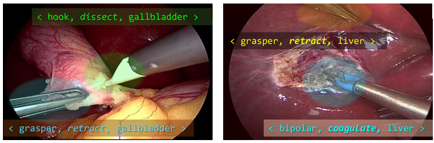
CholecTriplet2021: A benchmark challenge for surgical action triplet recognition.
Chinedu Innocent Nwoye, et. al, ...... Lalithkumar Seenivasan and Nicolas Padoy.
EndoVis21 Challenge, Medical Image Computing and Computer Assisted Intervention (Challenge, MICCAI), 2021.
[preprint]
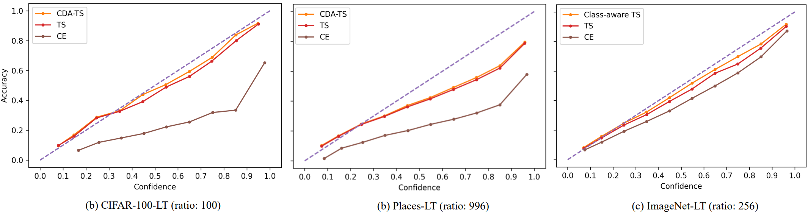
Class-Distribution-Aware Calibration for Long-Tailed Visual Recognition.
Mobarakol Islam, Lalithkumar Seenivasan, Hongliang Ren and Ben Glocker.
UDL Workshop, International Conference on Machine Learning (UDL, ICML), 2021.
[preprint]
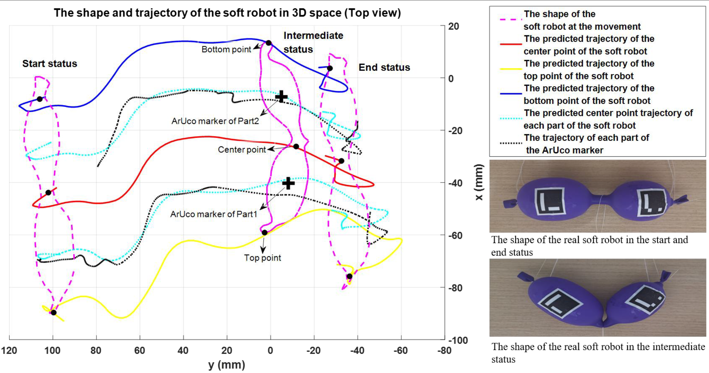
Shape Tracking of Flexible Morphing Matters From Depth Images.
Lalithkumar Seenivasan, Fan Bai, Ming Ji, Xiaoyi Gu, Zion Tsz Ho Tse and Hongliang Ren.
IEEE Sensors Journal, 2021.
[preprint]
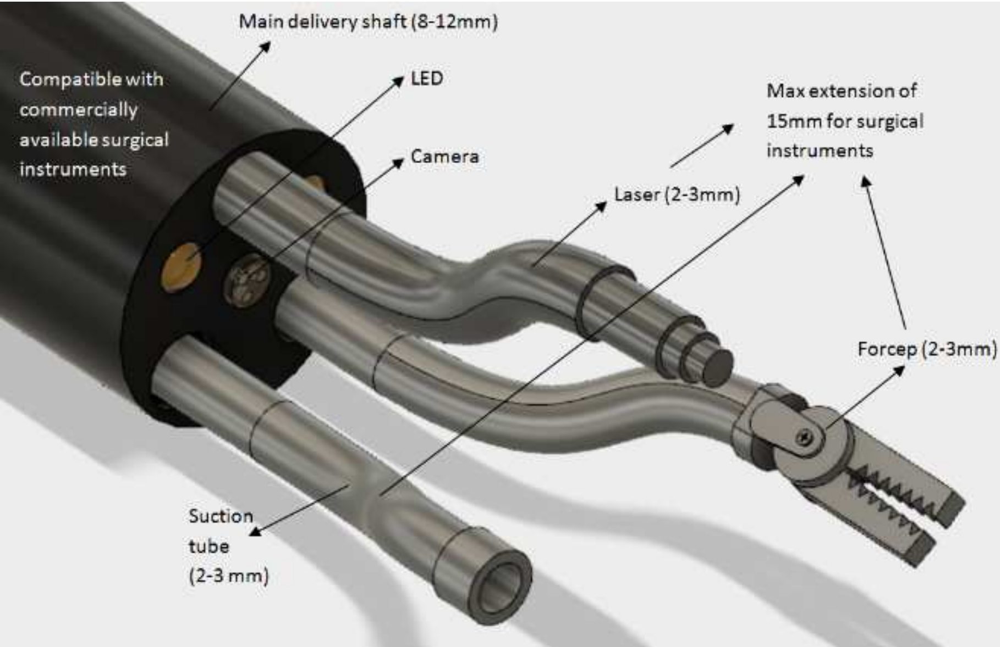
Pilot Study and Design Conceptualization for a Slim Single-port Surgical Manipulator with Spring Backbones and Catheter-size Channels.
Hongliang Ren, Cai Xin Chen, Catherine Cai, Krishna Ramachandra and Lalithkumar Seenivasan.
IEEE International Conference on Information and Automation (ICIA), 2017.
[preprint]
Book Chapters
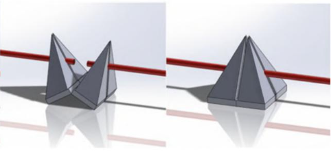
Untethered Soft Ferromagnetic Quad-Jaws Cootie Catcher with Selectively Coupled Degrees of Freedom.
Xinchen Cai, Catherine Jiayi Cai, Lalithkumar Seenivasan, Zion Tse and Hongliang Ren.
Deployable Multimodal Machine Intelligence: Applications in Biomedical Engineering, Springer Nature Singapore, 2023.
[preprint]
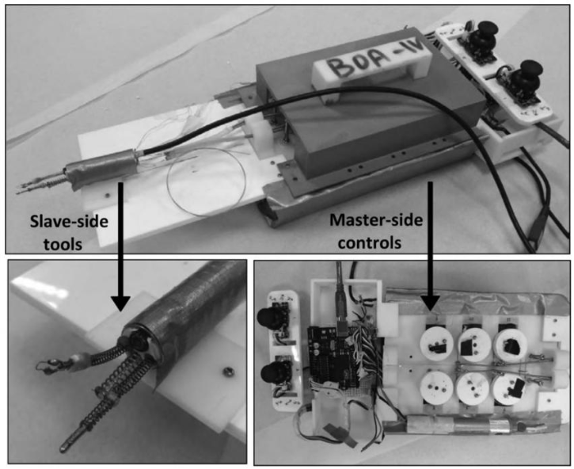
Tendon routing and anchoring for cable-driven single-port surgical manipulators with spring backbones and luminal constraints.
Lalithkumar Seenivasan, Xinchen Cai, Krishna Ramachandra, Francis Wong and Hongliang Ren.
Flexible Robotics in Medicine: A Design Journey of Motion Generation Mechanisms and Biorobotic System Development, Academic Press, 2020.
[preprint]
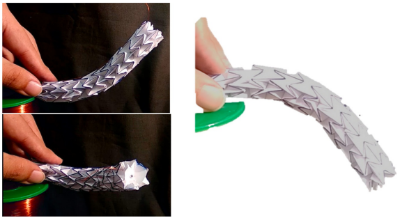
Tunable stiffness using negative Poisson's ratio toward load-bearing continuum tubular mechanisms in medical robotics.
Krishna Ramachandra, Catherine Jiayi Cai, Lalithkumar Seenivasan, Xinchen Cai, Zion Tszho Tse and Hongliang Ren.
Control Theory in Biomedical Engineering, Academic Press, 2020.
[preprint]
Boa-IV: Image-Guided Minimally Invasive Robotic Surgery
Design-Centric Program Undergraduate Project
Our team conceptualized and designed a novel tendon-driven actuation mechanism for stem actuation of catheter-size spring-backbone manipulators. Using this novel concept, we are also able to miniaturize surgical tools to a diameter of 2-3m that can be manipulated to perform surgical actions. The miniaturized surgical tools can be deployed through a single-port flexible manipulator, which has an overall shaft diameter of 8-12 mm.
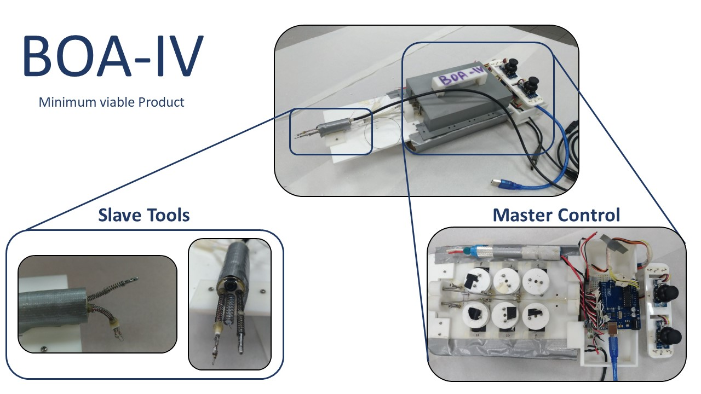
Minimum Viable Product


Slave (Forcepts and electrocautery) Control Demo
Related Papers
-
Pilot Study and Design Conceptualization for a Slim Single-port Surgical Manipulator with Spring Backbones and Catheter-size Channels.
Hongliang Ren, Cai Xin Chen, Catherine Cai, Krishna Ramachandra and Lalithkumar Seenivasan.
IEEE International Conference on Information and Automation (ICIA), 2017. -
Tendon routing and anchoring for cable-driven single-port surgical manipulators with spring backbones and luminal constraints.
Lalithkumar Seenivasan, Xinchen Cai, Krishna Ramachandra, Francis Wong and Hongliang Ren.
Flexible Robotics in Medicine: A Design Journey of Motion Generation Mechanisms and Biorobotic System Development, Academic Press, 2020.
TechX Challenge 2013, Singapore
Diploma Projects
I was part of the Temasek Polytechnic team in the TechX 2013 National Robotic Competition organized by the Defence Science & Technology Agency (DSTA), Singapore . The competition comprised 6 challenges, where, the robots were assessed on their ability to autonomously navigate challenging terrains to conduct search and rescue missions and simultaneously relay information to base station in real-time. Our team managed to pass the qualification round and qualified for the grand finals.


My Specific Contribution
I designed and developed 3D simulations of our robot and competition challenge environments using the ROS and Gazebo simulator. The resultant simulations enabled the software team to test our navigation and sensor processing algorithms.
Robot Simulation
|
Challenge Simulation
|

Robot and Challenge Simulation

Obstacle Avoidance

Staircase Climbing